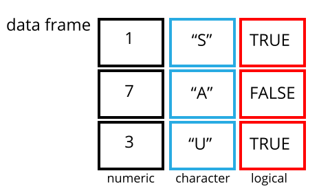

WolfWorks: An Introduction to R
Charlotte Hutchings
This is the course handbook for WolfWorks: An introduction to R.
Lesson 1: An introduction to R and RStudio
Objectives:
- Describe the purpose of the RStudio Script, Console, Environment, and Plots panes.
- Understand the concepts of absolute and relative file paths, and the purpose of a working directory.
- Use the built-in RStudio help interface to search for more information on R functions.
What are R and RStudio?
The term R refers to two things: (1) the programming language itself and (2) the software which interprets scripts written in the R language.
RStudio, which has now been re-branded as Posit, is an integrated development environment (IDE) which provides a user-friendly way to interact with the R software. To function correctly, RStudio needs R so both must be installed on your computer.
For additional information about RStudio please see the RStudio IDE Cheat Sheet.
Why use R?
There are many benefits to using R:
- R scripts are written in a linear manner, which makes the steps of your data analysis clear to both you and anyone else who should need to read it
- R code is great for reproducibility because the same results are obtained when using the same code to analyse the same data - this is increasingly a requirement for many journals and funding agencies
- R can integrated with other tools to generate manuscripts, PDF files and websites
- R is interdisciplinary and extensible with thousands of packages developed for specific analysis requirements e.g., image analysis, population genetics, GIS etc.
- R works on data of all shapes and sizes - once you can use R, it will make very little difference if your working with a small dataset (<100 entries) or huge dataset (millions of entries)
- R is free, open-source and cross-platform
- R has a large and welcoming community - lots of help is available online [see below]
The RStudio IDE
In order to begin using R, we first need to know our way around RStudio. RStudio consists of four “Panes”:
- The R console - for executing code
- The source - for scripts and documents
- The environment - for storing R objects from the current session
- The files, plots & help pane - various functions
These panes can be re-organised (relative size and position) to suit your working needs. To do this you can seeTools -> Global Options -> Pane Layout.
Some definitions
There is a certain terminology that is used when talking about using R. We will be using these key terms throughout the workshop:
- The term code can be used both to refer to the process of writing instructions in R and to the written instructions themselves
- We call each individual instruction a command
- To tell our computer system to follow the instructions, we execute or run the commands
The R console
By default, the R console appears in the bottom left-hand pane of your RStudio window. The console is the direct interface for the R programme. This is where commands are executed from.

We can type any command directly into the console and execute it by pressing Enter. Any output from the command will be displayed below it in the console. For example, we could use this area like a calculator. For example:
56 + 44## [1] 100By typing our command and pressing Enter, we have executed the code. Below we see two pieces of information. The first and most obvious output is the answer to the mathematical query that we executed - 100. In front of this we see [1]. To demonstrate what this [1] means, let’s execute the following code:
1:50## [1] 1 2 3 4 5 6 7 8 9 10 11 12 13 14 15 16 17 18 19 20 21 22 23 24 25
## [26] 26 27 28 29 30 31 32 33 34 35 36 37 38 39 40 41 42 43 44 45 46 47 48 49 50This command tells R to give us all numbers between 1 and 50, which it does. This time we have [1] and on the second line [26]. These numbers are R helping us to keep track of what number output we are looking at. This is particularly useful when the output of a command is long. R has told us that the second line starts with output number 26.
If R is ready to accept commands for execution, you will see the > prompt on the left hand side of the console. If R is in the middle of running something else and is not yet ready for more code, you will see a small red symbol appear at the top right-hand side of the pane. Once R has finished executing and is ready again, a new > prompt will appear. In some cases you may see a + prompt after attempting to execute a command. This means that the code you are trying to execute is unfinished in some way, for example missing a bracket (the most common explanation). If this happens, you can either provide the missing code by typing the ) and pressing Enter, or you can press Esc to cancel the execution, correct the code and try again.
To clear the console we can use Control + L. However, once the information stored on the console is cleared we will no longer have access to it. There is no reversing this clearance. Similarly, when we close RStudio and re-open it later, the console will automatically clear and none of our work will be saved.
The source and R scripts
Since code that is written and executed directly from the console cannot be saved, RStudio provides an alternative, more reproducible way to interact with R. Instead of writing in the console, we can use a script. A script is a plain text file in which we can write code and, most importantly, save code. An R script is written in the source pane, which by default is in the top left-hand pane of your RStudio window.

We can write our commands in the script in the same way that we did when using the console. We can then save this script as a file on our computer meaning that we can open it and re-run the code to get the exact same outputs.
When writing code into a script, the code will not automatically be executed. Instead, we need to pass the commands to the console to be run. To do this we use Control + Enter (you can also use Cmd + Return if you are using a Mac). As before, the code is then executed from the console and any outputs will be displayed there too. This means that the outputs of our script will not be saved, but the code to generate these outputs will be.
Note: Whilst we choose to write the bulk of our code in scripts so that it can be saved, there are some instances in which we may still want to use the console. For example, if we are just checking the name of an object (we will get onto objects in a minute) or the size of a variable (we’ll talk about variables too). Essentially, the script is for permanent code which we wish to save and re-run, the console is for temporary code which we only need in that moment.
The RStudio environment
The third pane in the top right-hand corner of the RStudio window has multiple tabs. We will only discuss the Environment tab, as this is arguably the most important and widely used.
The Environment keeps track of R objects and variables which have been created during the RStudio session (i.e., since opening RStudio). We will discuss this more later.
Files, Plots & Help
The final pane that you see in the bottom right-hand side of your RStudio window again contains several tabs.
What is a working directory?
Your working directory is the location on your computer where R will default to when reading or writing files. You can check where your current working directory is by typing getwd() into your console and executing.
getwd()## [1] "/Users/User/repos/Wolfson_Intro_R_Website"You can think of your working directory as a room in which R is sat. When you want R to fetch something from your computer, a data file for example, you have to give R a path to get to there and this path needs to start from where R already is i.e., your working directory. For example, if I wanted to load the “” file from within my “data” folder, I’d need to tell R to first go into “data”, then grab ““. Hence, the relative path would look like this:
"data/filename"
Alternatively, if I want to access a file that is not below my working directory in the file (i.e., I need to go leave the room to find another door), I can use ../ to mean go up one level. For example, if I wanted to access another folder within “repos”, I would need to leave the “Wolfson_Intro_R” room (which is my current working directory) and enter “repos”, so my filepath would be:
"../repos"
These are what we call relative file paths - the file path is given relative to our working directory. The alternative is to provide an absolute file path, which starts at the highest point in your computer system. For example, to access my “” file via an absolute path I would use:
"/Users/User/repos/Wolfson_Intro_R/data/filename"
For the rest of this course we will be using relative file paths from our working directory. Make sure your working directory contains a folder called “Data” with the relevant files in. If you wish to change your working directory to the place where you have this folder, you can use setwd() and provide an absolute file path to where the directory should be.
Getting help with R
This one-day course will introduce you to many of the key concepts that are used in R, but is far from extensive. The best way to become proficient at R is to use it - frequently. Although this may seem daunting at first, there are many places that you can turn to for help.
The built in RStudio help interface
As we saw briefly above, RStudio has a Help tab within the bottom right-hand pane. Here you can search for key words which relate to the problem that you’re having.
I know the name of the function I want to use, but I’m not sure how to use it You can use a single question mark followed by the function name to bring up the help page for that function.
?barplotI know what I want to do, but I don’t know which function to use to do it You can use a double question mark followed by a key word and RStudio will bring up suggestions on which function you may wish to refer to. Importantly, however, RStudio can only search for function that exist in your installed packages.
??kruskalOnline help resources
As with everything, if you still need help (e.g., you’re getting an error message that you do not understand) you should first turn to google. The odds are that someone else has already had this in the past.
Another great place to check is Stack Overflow using the [r] tag. If you word your question well and are clear about what it is you want to do, your query will often be answered within a matter of hours.
If possible, to increase the chances of other people being able to understand and recreate the problem or error that you have, you should provide a small, simple and reproducible example of your problem. Information about how to do this can be found here.
Lesson 2: Objects in R
Objectives:
- Understand the key terms object, variable, assign, call, function, argument, and options
- Know how to store and name objects within the RStudio Environment
Assigning values to objects/variables
As we saw previously, we can execute code directly via the console (by pressing Enter) or indirectly via a script (by pressing Control + Enter). The output of our command will appear in the console. However, if we want to store a value or data structure, we have to assign it to an object.
Some more important definitions:
- An object is a data store within R - it contains one or more values and these can be stored in various structures e.g., data frames, matrices, vectors (more about these data structures later)
- What are known as
objectsinRare known asvariablesin some other programming languages. In certain scenarios the terms object and variable have very distinct meanings, but for the context of today’s workshop they are the same thing - To store some data within an object, we must assign the data to our object. This is done using the assignment operator
<-
For example, if I wish to save the value 55 into an object called weight_kg, I could use the assignment operator like so:
# assign a value of 55 to a variable called weight_kg
weight_kg <- 55When I execute this code I notice that there is no output in the console. That is because R does not print anything when assigning a value to an object. However, we do see that this object has appear in our Environment pane. If we want R to both assign the value of 55 to weight_kg and at the same time print its value in the console, we can add brackets around our assignment.
(weight_kg <- 55)## [1] 55Now R has stored weight in its memory, we can use the object name to represent the value we have stored.
# print the value of weight
weight_kg## [1] 55# use the value of weight for arithmetic
weight_kg * 2.2## [1] 121As before, the output that appears in our console is the result of the arithmetic alongside a [1] to indicate that this is the first (and only) value of the output. Importantly, this has not altered the value of our weight_kg object because we did not assign the output of this code to the object weight_kg. If we want to save the value of weight_kg * 2.2 then we need to assign it to an object.
## assign the output of our arithmetic query to a new object
weight_lb <- weight_kg * 2.2Now I see both objects are present in my environment.
If we were to assign a new value to weight_kg, this would overwrite the previous value. Let’s try it.
weight_kg <- 62Question: What are the values of weight_kg and weight_lb now. Does weight_lg = weight_kg * 2.2?
Naming objects in R
Since we now know how to assign a value to an object using the <- operator, it is worth taking a moment to consider how we should name these objects. There are some basic naming principles that you should adhere to in R:
- Use meaningful names that relate to what is inside of the object - avoid meaningless names such as
a,b,c - R will not allow names with spaces in - it is common practice to replace a space with
_ - R will not allow an object name which begins with a number -
2xis not a valid name, butx2is - Avoid names that are the same as function names e.g.,
if,else,mean,dataandc - Avoid dots (
.) as many function names contain dots for historical reasons
You should also be aware that R is case-sensitive. This means that R does not consider weight_kg and Weight_kg to be the same thing. For more information about naming practices and writing neat code there are several R style guides e.g., the Bioconductor style guide or the tidyverse guide.
Comments
When we are writing a script we want to be able to annotate the script with notes and explanations of what the code is doing. This helps both your future self and anyone else who should ready your script to understand what is going on.
The comment character in R is #. Anything to the right of a # will be ignored by R. RStudio also helps us by changing the colour of our commented text so that we can see it easily.
Calling functions
Functions are one of the key features of R. A function is a self-contained module of code that has been written to carry out a specific task. R has many functions that allow us to automate common tasks. For example, think about how many R users around the globe will at some point take the mean average of some data. Rather than each individual writing out the arithmetic for this, R has a convenient mean function that already contains all of the required code.
Many functions are pre-defined in R and are already here and ready for use. For more specific analysis needs, thousands more functions can be installed and used by importing R packages (more on that later).
A function typically requires one or more inputs called arguments and usually returns a value. Executing a function (i.e., running it) is referred to as calling the function.
Let’s look at a simple example, the round function. This function takes a number and rounds it, as indicated by the name.
round(x = 3.1415926)## [1] 3Here, we have called the round function and passed it the argument x = 3.1415926. If we want to see what the argument x requires, we can use the single question mark help function that we saw previously.
?roundThis tells us that the argument x is a numeric vector i.e., the number that we wish to round. We can also see that there is another argument available for this function, the digits argument. We did not previously pass this argument because it is not an absolute requirement. Many functions have these optional arguments (called options) and if they are not specified they will take on a default value. Here, the default value for the digits argument is 0 (i.e., round to the nearest whole number). The default value can be overwritten by specifying this argument in our code.
round(x = 3.1415926, digits = 2)## [1] 3.14In this example we have explicitly named the arguments x = and digits =. This is not always necessary in R, but it is useful when starting out. When we name the arguments, the order we provide them in does not matter because R can still tell what we are referring to. If, however, we provided our arguments without naming them, then we would have to be careful about their order.
There is a default order in which R expects to receive arguments for a function. If we don’t provide explicit argument names, we have to stick to the default order so that R can tell which argument is which.
# Pass arguments in the correct (default) order with names
round(x = 3.1415926, digits = 2)## [1] 3.14# Pass arguments in the correct (default) order without names
round(3.1415926, 2)## [1] 3.14# Pass arguments in alternative order with names
round(digits = 2, x = 3.1415926)## [1] 3.14# Pass arguments in alternative order without names
round(2, 3.1415926)## [1] 2This is particularly important as we begin to use more complex functions that require a larger number of arguments.
Some useful math/stat functions in R:
max(): maximum value in a numeric vectormin(): minimum value in a numeric vectorrange(): vector of min and maxsum(): sum of a vectormean(): mean of a vectormedian(): median of a vectorvar(): variance of a vectorsd(): standard deviation of a vectorsort(): sorted version of a vectorlength(): length of an objectcor(): correlation of x and y
Challenge: Objects in R
Create two new objects called mass and age and assign the values of 122 and 47.5 to them, respectively. Now use these objects to calculate the value of a new object called mass_index (equal to mass divided by age).
Now change the value of mass by multiplying it by two and change the value of age by minusing 20. What is the value of the mass_index now?
Lesson 3: Data structures in R
Objectives:
- Have a basic knowledge of the key data structures used in R: vectors, data frames, and matrices
- Be aware of the different data types that can be stored, including numeric, character and factors
- Understand how to generate a
data.frameand access information from this structure using indexing - Know how to identify and deal with missing data in R
Vectors and data types
R has many structures in which data can be stored and manipulated:
- Vectors
- Data frames
- Matrices
- Lists
- Factors
The most common and basic of these structures is a vector, sometimes referred to as an atomic vector. Whilst vectors can be used as a structure in themselves, they are also the basic building blocks of several other data types, as we will see later.
A vector is simply a collection of values. These values can any of the 6 basic data types in R:
- character = a series of letters, numbers and/or punctuation marks (a string). Always found between quotation marks (single or double) e.g.,
"a","fish","3.14". If a number is found in quotation marks, R will interpret this data as being of type character, not numeric. This is important because R cannot then use this data in a numeric manner i.e., to carry out arithmetic. - double = one of the two numeric data classes in R, standing for double precision floating point numbers. This means any real number, an integer or a decimal (10, 3.14, 1.45765, 10000, 5)
- integer = the second of the two numeric data classes in R, holding only integer values e.g., 5L (the “L” tells R to store this as an integer rather than double)
- logical = a
TRUE,FALSEclass - complex = complex numbers with real and imaginary parts
- raw = holds raw bytes
Data types 5 and 6 are rarely used and will not be covered in this workshop. As outlined above, numeric data in R can be stored as either double or integer. You don’t need to worry about this because R will automatically convert between these classes when required for mathemetical purposes. There is really no need to explicitly state or know which or the two numeric classes the data is.
A vector is a collection of values of the same data class. You can visualise a vector like this:

To create a vector we use the c() function, where c stands for combine. We pass the function our values, each separated by “,”.
## Create a numeric vector and assign to the object weight_g
weight_g <- c(50, 60, 57, 82)This is a numeric vector. We can also create a character vector.
## Create a character vector and assign to the object molecules
molecules <- c("dna", "rna", "protein")Question: What happens if we try to create a character vector but forget to include our values in quotation marks?
## What if we forget our quotation marks?
molecules <- c(dna, rna, protein)
Exploring vectors
There are several key functions that allow us to find out information about a vector. The class() and length() functions will tell us what data class is stored within a vector and how many data elements there are.
## Check class and length of weight_g
class(weight_g)## [1] "numeric"length(weight_g)## [1] 4Question: What will be the outputs of class and length when we pass our molecules vector?
To get both of these pieces of information at the same time we can use the str() function, standing for structure.
## Check the structure of weight_g
str(weight_kg)## num 62
Indexing vectors
Sometimes we might wish to access only certain elements of a vector. To do this we need to introduce the concept of indexing. The term indexing refers to selecting a subset of elements. To do this, we use square brackets and provide one or more indices.
## Return the first element in the weight_g vector
weight_g[1]## [1] 50## Return the third element in the weight_g vector
weight_g[3]## [1] 57## Return all elements between positions 1 and 3 in weight_g
weight_g[1:3] ## Based on a sequence## [1] 50 60 57weight_g[-4] ## Using the minus sign to ask for all except 4## [1] 50 60 57Question: How could we index multiple elements that are not together in a sequence. For example, if I only wanted elements 1 and 3 from weight_g?
We can also do more complex indexing based on conditions (conditional indexing). For instance, if we wanted to return the element “rna” from our molecules vector but we don’t remember which position it is in.
## Index all elements in molecules that are "rna"
molecules[molecules == "rna"]## [1] "rna"We can also do this for numeric vectors using mathematic operators. Let’s try to subset elements from our weight_g vector that have a value greater than 55.
## Index all elements in weight_g that are > 55
weight_g[weight_g > 55]## [1] 60 57 82We can combine multiple conditions use the & (and) and | (or) operators.
## Index all elements in weight_g that are > 55 and < 80
weight_g[weight_g > 55 & weight_g < 80]## [1] 60 57## Index all elements in weight_g that are > 55 or < 80
weight_g[weight_g > 55 | weight_g < 80]## [1] 50 60 57 82Question: What is actually happening behind the scenes when we do conditional indexing? Think about the data classes. See what happens if we execute the condition outside of the indexing.
weight_g > 55## [1] FALSE TRUE TRUE TRUEQuestion: Why does "four" > "five" return TRUE? What is happening in this conditional statement?
"four" > "five"## [1] TRUE
Coercing vectors into a single data class
One of the primary features of a vector is that it represents a linear collection of elements that must be of the same data class. Above we looked at both numeric and character vectors. If we try to create a vector with multiple data classes, R will automatically coerce the elements into a single data type.
## Try to generate a vector with multiple data classes
mixed_vector <- c("dna", 12, 45, "rna", 77)
str(mixed_vector)## chr [1:5] "dna" "12" "45" "rna" "77"The numeric values have been coerced into character values, which we can see from (i) the chr and presence of quotation marks.
Question: What is the hierarchy which R uses for the coercion of different data types? Try generating vectors with:
- Character and numeric values = coerced to…
- Character and logical values = coerced to…
- logical and numeric values = coerced to…
For more information about coercion behavior in R see here.
It is important to know what data class you are dealing with because this will influence what you can and cannot do with the data. We can convert the data type of a vector to a different class using the “as” family of functions:
as.character(): convert to character type dataas.numeric(): convert to numerical vectoras.integer(): convert to integer vectoras.logical(): convert to logical vector
Vectorization in R
Most of R’s functions are vectorized meaning that the function will operate on each element of the vector. This makes coding more concise, easier to read, and less prone to errors.
## Vectorized function - function applied to all elements of a vector independently
weight_g * 5## [1] 250 300 285 410
Factor vectors
R has a special way of dealing with categorical data - the factor. Categorical data might be something such as sex - “Male”, “Female” - or tumour stage - “Stage1”, “Stage2”, “Stage3”, etc. Critically, the possible entries, or levels, of a factor are limited.
While factors look and behave like character vectors, they are actually stored by R as an integer vector, so it is important to be careful with them when treating them as strings or transforming them to other data types.
We can convert a character vector into a factor using the factor() function. Let’s try this with our molecules vector.
## Convert molecules vector into a factor
molecules <- factor(molecules)
## Check structure
str(molecules)## Factor w/ 3 levels "dna","protein",..: 1 3 2We now have a factor with each category stored as a level. As mentioned above, R treats the levels of a factor as integers, here 1, 2 and 3. These integers are assigned to the levels alphabetically, which is not necessarily the order in which we specified them. We can check the order of our levels using the levels() function.
## Check levels
levels(molecules)## [1] "dna" "protein" "rna"These are returned in alphabetical order. For plotting or statistical analysis, the order of the levels will sometimes matter. If we want to re-order the levels of a factor we can make use of the levels argument of the factor() function.
## Create a factor and specify level order
molecules <- factor(x = molecules, levels = c("dna", "rna", "protein"))
## Check
levels(molecules)## [1] "dna" "rna" "protein"Alternatively, we can over-write the pre-existing levels of a factor like so:
## Re-order the levels of a factor
levels(molecules) <- c("protein", "dna", "rna")
## Check
str(molecules)## Factor w/ 3 levels "protein","dna",..: 1 2 3Factor vectors can be converted back to numeric or character classes using the as.numeric() and as.character() functions.
Challenge: Vectors in R
Create a new vector called heights with the following values: 63, 69, 60, 65, NA, 68, 61, 70, 64, NA, 72, 65. Use the median() function to determine the median of these values. Remember that you can use ?median to ask for help using this function. After this, use R to determine how many people in the set are taller than 67 inches.
Data frames
Vectors are arguably the most important base structure in R. However, most of the time we want to store multiple data variables of different data types in a single object. That is where data frames come in. A data frame is a simple tabular structure in which the columns are vectors of the same length. Since a data frame contains multiple vectors it is able to store data of multiple different classes.
A data frame is the most similar structure in R to a standard spreadsheet.

We can generate a data frame from vectors of the same length using the data.frame() function. Let’s create a data frame containing information about Cambridge Students.
## Create vectors that will become columns (all must be the same length)
sex <- c("male", "female", "female", "male", "female")
height_cm <- c(175, 165, NA, 168, 178)
college <- c("Wolfson", "Kings", "Lucy Cavendish", "St.Catherines", "Wolfson")
## Combine vectors into a single data frame
students <- data.frame(sex, height_cm, college)
## Check the structure
str(students)## 'data.frame': 5 obs. of 3 variables:
## $ sex : chr "male" "female" "female" "male" ...
## $ height_cm: num 175 165 NA 168 178
## $ college : chr "Wolfson" "Kings" "Lucy Cavendish" "St.Catherines" ...
Inspecting data frames
In addition to str, there are many functions that can be used to inspect the data stored within a data.frame.
dim()= returns a vector in which the first element is the number of rows and the second element is the number of columnsnrow()= returns the number of rowsncol()= returns the number of columnshead()= displays all columns of the first 6 rowstail()= displays all columns of the last 6 rowsnames()orcolnames()= returns the column namesrownames()= returns the row namessummary()= provides summary statistics for each column
Indexing data frames
We already learnt how to subset information from a vector by indexing. Now we are going to extend this to subsetting information from a data frame. The main difference here is that, unlike 1 dimensional vectors, data frames have 2 dimensions (the rows and columns). Hence, we need to provide two indices in our square brackets - [row, column].
## First element in the first column of the data frame
students[1, 1]## [1] "male"## Second element in the first column of the data frame
students[2, 1]## [1] "female"## Second element in the third column of the data frame
students[2, 3]## [1] "Kings"If we leave one of the indices empty, the default is to give us everything.
## All elements in the second column of the data frame
students[, 2]## [1] 175 165 NA 168 178## The first element in all columns of the data frame
students[1, ]## sex height_cm college
## 1 male 175 WolfsonAs before, we can also exclude certain indices of the data frame using the “-” sign.
## All columns except the third
students[, -3]## sex height_cm
## 1 male 175
## 2 female 165
## 3 female NA
## 4 male 168
## 5 female 178In addition to the indexing we saw with vectors, data frames can also be indexed using the column names directly:
## Subset using column names as indices
students[, "sex"]## [1] "male" "female" "female" "male" "female"students$sex## [1] "male" "female" "female" "male" "female"One can use & (and), | (or) and ! (not) logical operators for complex subsetting, as we saw before for vectors.
Matrices
The final data structure we are going to meet in this workshop is a matrix. Like data frames, matrices are two dimensional - they have both rows and columns. Unlike data frames, however, matrices can only store one data type: numeric, logical or character. In that respect, matrices are more similar to a vector.
To generate a matrix we use the matrix() function. This function takes a vector of values (of any single data type) to populate the matrix with and the number of rows and columns that this should be divided into. The values are filled in column-by-column.
## Create a 3x3 matrix containing the values 1 to 9
(example_matrix <- matrix(1:9, ncol = 3, nrow = 3))## [,1] [,2] [,3]
## [1,] 1 4 7
## [2,] 2 5 8
## [3,] 3 6 9## Create a 3x2 matrix containing the character values 1 to 6
values <- c("one", "two", "three", "four", "five", "six")
(example_matrix_2 <- matrix(values, ncol = 2, nrow = 3))## [,1] [,2]
## [1,] "one" "four"
## [2,] "two" "five"
## [3,] "three" "six"A matrix can be indexed in the same way as a data frame, using [row, col].
## First element in the second column of a matrix
example_matrix[1, 2]## [1] 4Matrices are commonly used in statistical analyses and modelling. If we have a data frame containing only numerical information and wish to convert this into a matrix we can do so using the as.matrix() function.
Lesson 4: Starting with data
Objectives:
- Upload data from a
.csvfile into adata.framein R - Manipulate a
data.frameby re-naming columns and rows and converting columns between data types - Be aware of different approaches to dealing with missing data
- Export a
data.framefrom R into a.csvfile
The use-case data
For the remainder of this workshop we will be looking at real-life data from Blackmore et al. (2017), The effect of upper-respiratory infection on transcriptomic changes in the CNS. In this study, mice were treated with either (i) Influenza A virus or (ii) control saline solution. At 0, 4 and 8 days post-treatment, samples were taken from the cerebellum (brain) and spinal cord tissues and the gene expression in these tissues was measured.
The dataset is stored as a .csv file. Each row holds information for a single RNA expression measurement and the columns include various attributes associated with this measurement. Examples include:
| Column | Description |
|---|---|
| gene | The name of the gene that was measured |
| sample | The name of the sample that the gene expression was measured in |
| expression | The quantitative value of the gene expression |
| organism | The organism/species - here all data were from mice |
| age | The age of the mouse - here all mice were 8 weeks |
| sex | The sex of the mouse |
| infection | The infection state i.e., Influenze A or not infected (control) |
| strain | The strain of mouse |
| time | The duration of infection (in days) |
| tissue | The tissue that gene expression was measured in - either cerebellum or spinal cord |
| mouse | The mouse unique identifier |
Downloading and importing data
There are two ways in which you can download the data required for this workshop. Firstly, we can use the download.file() function and pass it two arguments - the url where the data is stored and the destfile where we want to save it on our local system. Remember, when giving a file path to destfile, this can be absolute or relative. If you’re using a relative filepath, make sure you know where your working directory is (since this is where the path is relative to).
The second way to download this file would be to manually visit the url and save it into our desired file from there. Since we can do it all within R, let’s do it the first way.
## Download data file into desired local destination
download.file(url = "https://github.com/carpentries-incubator/bioc-intro/raw/main/episodes/data/rnaseq.csv",
destfile = "raw_data/rnaseq_data.csv")Now that we have the file stored on our local system we can load the data into R. To do this we use the read.csv() function and pass the relative path to our file. Remember to assign the data to an object, here called rna_data.
read.csv()reads data from a comma-separated (CSV) file into a data frameread.delim()reads data from a delimited files (default is tab-delimited) into a data frame
The read.csv2() and read.delim2() functions are designed for countries that use “,” as decimal places rather than separators. Here, the separators are typically “;”.
## Load data into R as a data frame
rna_data <- read.csv(file = "raw_data/rnaseq_data.csv")As we expect, R does not give us any output from an assignment, but we should see that our data has now appeared in the RStudio environment.
Checking our understanding
To bring together everything covered in the workshop so far, please complete the three challenges below.
Tips:
- Ask for help using the
?or??notation - Be aware of missing data (NA values)
- Remember the different properties of character vs. factor data types
- Break each challenge down - think about what data you need and in what format
Challenge: Basic plotting
Re-create this plot showing the expression of Ubfd1 at 8-days post-treatment in male and female mice. Think about which data is displayed on the graph - this is the data you need from our data frame. Explore the use of the plot() function.
Challenge: Basic statistics
Using the rna_data data set, test whether the expression of Fbxl22 is correlated with time. Explore the use of the cor.test function.
- What is the estimated correlation coefficient?
- What is the p-value?
- What is the correlation coefficient confidence interval?